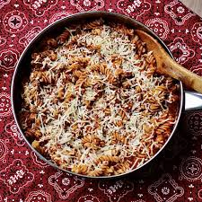

Home
One Pot Turkey Pasta

Description
This is a quick and easy one-pot main dish meal.
Substitute your favorite ground meat, broth, spices, and pasta shape.
For those who want an easy meal or those beginning to cook - this is for you.
Ingredients
- 1 pound ground turkey
- 1 medium onion, chopped
- 3 cloves garlic, minced
- 2 tablespoons chopped fresh oregano
- 1 teaspoon garlic powder
- 1 teaspoon dried basil
- 3 cups rotini pasta
- 1 (28 ounce) jar spaghetti sauce
- 1 (14 ounce) can chicken broth
- 1/4 cup freshly grated Parmesan cheese, or to taste
Steps
- Heat a high-sided 12-inch skillet with a lid over medium heat. Add ground turkey, onion, and fresh garlic.
Cook, stirring occasionally, until meat is browned, about 8 minutes. Season with oregano, garlic powder, and basil. Mix in rotini pasta and stir until well combined.
- Pour in pasta sauce and broth, making sure pasta is completely covered. Bring to a boil, reduce heat, cover, and cook until pasta is tender yet firm to the bite, 7 to 10 minutes.
- Top with Parmesan cheese.